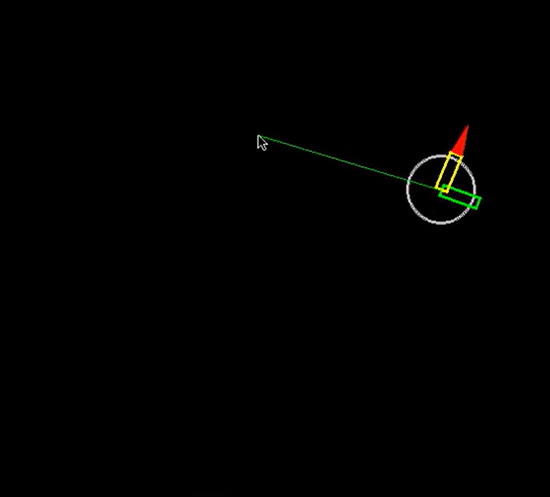

|
This sequence of topics reflects a J-term course given at Gustavus Adolphus College in 2013. Much of this content is demonstrated on the
Springs & Pucks
page using a live HTML5
Canvas. Here are links to the corresponding
video walkthrough
and the games:
puck popper,
monkey hunt, This was originally presented in a classroom with a mixture of lecture and lab; most of this had verbal explanation. The revision history has a discussion on the scope of the J-term course. It's posted here in support of any that wish to offer the course and for the curious out there who want to play with this on their own. It's a great way to gain useful coding experience and learn the Python language. This tutorial emphasizes the following:
Each topic below has the following:
Finally, some thanks directed at sites that sparked this one:
|
|
| First steps | |
|
Installation of the Working Environment:
The Windows-install.zip file contains the installation files that are used for the course. More recent versions can be found, but this set is certain to work. These have been tested on XP, Win7, Win8, and Win10.
|
|
|
Window's Command Window (cmd) and the
Notepad++ Editor: This is a small collection of useful Windows and Notepad++ tips
for the beginner and/or those new to Windows. Installation on Linux and the Raspberry
Pi: This page describes a couple of my adventures with the RPi: python-physics engines (of course) and a few words on setting up a music server. You'll find details on the Linux installation of the working environment and discussion on the changes made to these scripts to get them running well on the RPi. There's a video that shows the surprisingly good performance of these scripts on the RPi-2. If you watch it to the end, you'll see my wife getting the best of me in Puck Popper. This page also has a good summary of the keyboard and mouse controls that are used in most of the scripts. |
|
|
This first assignment illustrates the display window and event-handling features that are used from Pygame. Drawing, erasing, and screen updating are viewed in the Pygame window. Keyboard and mouse events are interpreted and used to control the drawing algorithms. A game loop keeps repeating the process: erase, draw, update the screen. Holding down the "e" key enables screen erasing every time through the game loop. Holding down the "f" inhibits the flip operation that is use to update the screen at the end of the game loop. The two mouse buttons are used to change the color of the circle. The video starts with the erase feature. With erasing enabled, the ball seems animated (the drawing tail does not persist). Later the flip (screen update) operation is inhibited (these are drawn in memory but not to the screen). Finally a combination of erasing and flip inhibiting cause the ball to lag behind and then catch up to the cursor. |
|
| 1D | |
|
A Pure-Python Physics Engine
This first look at a 1D-physics engine does so without any rendering
in the Pygame display window. Instead, this outputs to a simple text string that is
printed to the command line. The #1 version is fully functional
with only one page of Python code. The #2 version can be executed
with command-line parameters and facilitates running the various
examples in the video. The video is best viewed in full-screen mode so that the preliminary text, before each example run, can be read. Near the beginning of the video, an annotation block is used to help the viewer direct (and keep) his gaze on the first row of output. This first row yields the intended animation effect: move, draw, erase, repeat. There is an animated-gif capture of the "first row" displayed at the top of the code discussion page. This rendering approach has the added advantage of preserving the frame history. As the viewer looks up to higher rows on the screen he is looking back in time, frame by frame (row by row). This can help in visualizing and understanding wall collisions and the associated position corrections that are made. |
|
|
1D-Physics Engine Framework The 1D framework introduces the relationship between the screen and the physics world. It also brings in the first taste of Euler's method in animating the motion. There are no car-wall or car-car collisions here; no gravity. Cars just pass through each other (and walls) and no acceleration from gravity. OOP classes are used here to organize the code and prepare for the object nature of the games to follow. The video shows five short demos (press keyboard numbers 1 through 5). The first two are two-car animations. The last three show stacks of cars spreading out due to the differences in their velocities. The car in the middle of the stack has zero velocity. At any point in time, the relative velocity of any pair of cars is proportional to the separation distance between them (kind of like Hubble's law). |
|
|
Wall Collisions, Gravity, and Stickiness Euler's method comes to life here. Velocities are changing under the accelerating influence of gravity. There is a drawing in the PDF that illustrates the idea of penetration/stickiness correction. (Note that the drawings in the PDFs display with varying quality depending on the browser; Chrome: great, IE: OK, Firefox: not so hot.) For now, we'll just do the stickiness correction; later there will be several video demos of this issue. A coefficient of restitution is used to model the energy loss in the wall collisions. Notice the apparent settling of the cars at the end of the video. (Note: You can watch in full-screen mode using the YouTube controls in the lower right corner of each video. Esc to get back to this page.) |
|
|
Car-Car Collisions and Stickiness Car-car collision physics and car-car stickiness correction are
added here. This script uses the "c" and the "s" keys to toggle
two algorithmic features that help to illustrate the collisions
and stickiness. The "c" key toggles the "color-transfer" feature
which, when enabled, causes the colors of two colliding cars to
swap. So when two cars start to settle near a wall under the influence
of gravity, they collide frequently and the colors will swap quickly
to show the cars are still colliding. If this feature is off the
cars will appear to settle, but the cars really don't settle in
our basic physic engine! (Later with Box2D we will show true settling.)
The "s" toggles the stickiness correction on and off. So if you
turn off the correction, the cars will be pulled into each other
as they settle. Hit the "s" key again and they will unstick with
a little pop. A combination of the "c" and "s" key is used at the
tail end of the video. Sorry, this one runs a little long (kind
of like watching paint dry). |
|
|
The user gets to interact with the objects on the screen. Cursor spring and drag forces are calculated based on the separation distance between the cursor and the selected car (and the velocity of the car). Cars are selected by clicking on the car or holding down the mouse button and letting the car run over the cursor. Cursors attach at the center of the car. Each mouse button invokes a different cursor tether (with a different spring constant and car drag coefficient). The left mouse button is medium, the right mouse button is stiff, and the center (roller) button has the softest spring. The video closes with me trying to pull the car into the wall. The color transfer ("c") is turned on so the frequent collisions are illustrated. Note you can again turn off the stickiness correction here ("s") and pull the cars into the wall; then toggle it off and watch them pop out (not so much "paint drying" here since you can pull them in pretty quickly, especially with the stiffer of the three cursor tethers). |
|
|
Gui here, not just sticky (ha ha). Controls have been added for stickiness and color-transfer toggles as well as a gravity slider (for simulating that bad cruise-liner experience) and a button to freeze the cars. If gravity is set to zero, a freeze operation will stop the cars and they will stay that way until... |
|
|
Hollow Cars and Demos Car mass is visualized here by hollowing out the lighter cars. The video shows 10 of the 13 demos. The demo number is indicated in the window title (upper part of the Pygame window frame). Demo #4 shows the inelastic collisions between a set of cars where the total momentum of the set is zero before and after the collision (a reverse explosion). Most of the other demos make use of the color-transfer feature to highlight the transfer of momentum through cars (like Newton's cradle). A description of each demo is in the PDF. |
|
|
Counting to pi This counting method, documented in Galperin's 2003 paper, is beautifully described in this 3Blue1Brown video. Our 1D engine is modified here to facilitate the counting of the elastic collisions in this method. A mass ratio of 100 to the 4th power is used in the video here (surface area ratio of 100, density ratio of 100^3) and yields the first 5 digits of pi. Play this video fullscreen to see the blue counter on the far right. Or try this interactive 2-digit version using Box2D. A secondary loop runs the physics calculations 1000 times per rendering frame. The collision sound (the clack) plays at most once per frame. Alternating collisions (block-block, then block-wall) are enforced in the code and the large block is not allowed to collide with the walls. This is an addition to the code of the "Hollow Cars and Demos" topic above. Just scrape the code from there if you'd like to try this. To run it press the 4 key on a number pad or use shift and the 4 key on the main keyboard. You'll need the clack_long.wav file in the same directory as your python file. To try different mass ratios, edit the parameters in the 4p block of the make_some_cars method. |
|
| Multiplayer | |
|
PodSixNet Demo The video shows the server window and one client's game-pad window (also running on the server's computer). Another client (running on a networked laptop) is connected but not visible in the video. The state (U:up or D:down) of the a-s-d-w keys of each client are also rendered on the server screen. Please note that this client works only for this assignment. The last 200 mouse locations (when mouse button is down) are drawn each game loop. This causes the dynamic tails effect. One Friday we ran this server on the computer that hosts the projector in the lecture room. Many students connected using the client. For a while we tried this with no verbal communication. It was interesting to see how cooperative this became in spite of the silence. The multiplayer techniques introduced here are applied in the 2D-Physics Engine Framework topic below. |
|
| 2D | |
|
The Vector Class Module This vector class is used in all the 2D assignments that follow. The test code illustrates most of the features that will be used. The video shows a vector sandbox that is based on the vector class. There are seven demos that are run (start these using the number keys above the letters on the keyboard). Each demo uses a set of vectors ranging in set size from 2 to 140. Vectors can be selected with the mouse (click and drag over the arrow head). Components of selected vectors can be displayed ("c" key toggles this on/off). Components include x, y, unit normal (red), unit perpendicular (red), and the projection of the selected vector onto a second vector. Vector rotation can be toggled on/off with the "f" key. The "a" key toggles the display of the add vector (grand total), which is shown in green. In "add" mode each vector in the sum series is rendered head to tail. The "t" key toggles on/off the display of a tail drawn from the head of the total vector. The tail is represented with a 350 point FIFO list of the most recent points. The tail can be shown as points or lines (toggle back and forth with the "l" key). Zoom in/out with the "h" and "n" keys. |
|
|
2D-Physics Engine Framework This assignment merges the 1D engine with the 2D vector class and the multiplayer module. The spring class is also introduced here. There are drawings in the PDF that explain 2D collisions, stickiness corrections, and the client-server relationship. The video shows two cursors, one from the local client and the other from a network client on a laptop. Left and right hands are working the two cursors. It's surprisingly natural (we've got two hands). One section of the video shows the two cursors' tethers pulling two balls together and watching the transition from stable to unstable as the cursors cross each other; once unstable, the balls flip their positions to get back to stability. Stickiness behavior is toggled on/off with the "p" key; the black background turns grey when the stickiness corrections are off. The client script that is used here works with all the following assignments (except the first two in the Box2D section). |
|
|
Rotating Tubes This introduces the concepts behind polygon rotation as facilitated by the rotation methods in the vector class. This tube class will be the base class for representing both jet and turret tubes. |
|
|
Rotating Tubes and Jets on Client Puck A raw tube and a jet tube are associated with a client-controlled puck. The association causes the tubes to move with (are drawn relative to the center of mass of) the pucks. A new three-point red polygon is used to represent the jet's exhaust flame. The video shows the local client and a network client controlling (rotating) tubes on the two pucks. Python inheritance is introduced in this exercise: jet-tube is derived from the tube base class. |
|
|

Jet Forces A thrust force is added to coincide with the jet's flame. This brings the total to four forces that are being processed in the physics engine: gravity, cursor-tether tension, spring-damper, and now jet force. The "w" key turns on the jet forces that are applied to the host puck along the direction of the jet-tube axis. This jet-force vector is added to the puck_forces_2d_N (net-force-on-puck) vector and processed in the Euler's method calculations. The video show a cursor tether restraining a puck under continuously applied jet forces while the jet tube is turned at a constant rate. |
|
|
Gun and Impulse Forces The physics of gun recoil is modeled with an impulse force. Each bullet firing causes an opposing impulse force to be delivered to the gun. The magnitude of this force is equal to the change in momentum of the bullet divided by the duration of the firing interval (one step in time by the physics calculations in the game loop). Bullet clean-up is implemented by assigning a birth time to each fired bullet. Bullet objects older than 3 seconds are deleted. |
|

Final Game Features This assignment adds features to make a playable game. For example,
a hit counter (a hit by another player makes your puck flash red)
is the basis for establishing the health of each player. Health,
or rather the lack of it, is illustrated with an expanding red circle.
Too many hits and your puck pops (hence the name of the game: Puck
Popper). Shields (hold down the space bar) prevent bullets from
hitting your puck; when shields are up, you can't fire. The "s"
and "k" keys are used to flip the tube directions into an orientation
opposing the current motion of the puck; this can be useful in breaking
(stopping). The "a","d", and "w" keys orient and fire the jet; the
"j","l", and "i" keys orient and fire the gun. The "f" and "g" keys
can add an interesting dimension to the game by the local user (user
on the server computer); try it. The video shows me playing Puck Popper solo with something heavy
sitting on the "i" key of my laptop. So the red player is pretty
much a sitting duck in the corner. But you get the idea of the shields,
health circles, and the popping pucks. I also do one round of Jello
Madness and got a de-tangling time of 22.15 seconds (a big part
of this is to really make a mess of it for the other guy). Jello
Madness requires an I5 processor or better; this will crash (become
unstable) on slower machines. |
|
|
Perfect Kiss The perfect-kiss algorithm is a refinement to the overlap-correction calculations described in the 2D-Physics Engine Framework assignment. This refinement offers true contact-normal calculations and corresponding ideal modeling of 2D puck collisions. The video is annotated to show three categories of puck collisions: (1) raw (no overlap correction), (2) overlap correction using the approximate-contact normal, and (3) overlap correction using the idea-contact normal. The speed of the incoming puck is chosen to produce large overlaps and its initial position is randomized to show a variety of responses. The third category of runs shows a consistent collision prediction that is independent of the amount of overlap at the collision detection point. To illustrate the correction process, two intermediate steps are drawn with special colors: Both overlapping pucks are drawn in red; Both kissing pucks are drawn in cyan. The final corrected position is drawn in normal puck colors. There are cases where some of the intermediate puck images are not visible because they lie directly underneath a subsequent drawing. |
|
|
Playing Catch with Perfect Kiss The ideal collisions of the previous topic support reversibility in our 2D framework. This means an ordered set of pucks can be disordered through a series of collisions and then returned to order by reversing the direction of the time step or by reversing the velocity of each of the pucks. This produces a very counterintuitive result, like watching a scrambled egg return to the shell by playing a video in reverse, decreasing entropy. The video shows each of the first four demos running in perfect-kiss mode (background turns from black to gray), flinging a puck to disorder the set, waiting for disorder, then pressing the "r" key to reverse all the puck velocities. The collision counter (upper left) will start counting in the reverse direction at this point. As the counter approaches zero, order returns and flings the ball back where it is caught with the mouse. Watch fullscreen to better see the output from the command line. Keyboard commands for playing with reversibility:
"z" enables the Perfect Kiss algorithm. This
also set each puck to be elastic; coefficient of restitution
is set to 1.0. |
|
| Box2D | |
|
Pybox2d Framework Example This script is based on the test_BodyTypes.py file in the examples directory of the pybox2d distribution. This depends on the Pygame framework in that distribution so all the framework files must be in the same directory as this file. (This script works best if you run it in the box2d_jdm folder of the zip distribution provided above.) This file has been modified to support bullet shooting. (I looked through their examples for one that had some hinged object that would work for aiming the projectile stream.) The main adders here are: (1) bullet aiming and firing, (2) masking of objects (bullets pass through the gun base without a collision), (3) age limits on the bullets so they clean up after themselves (the simulation would labor if the collection of bullets kept growing), (4) the cursor gun, (5) something interesting to shoot at (target generation): pyramids, circles, and squares. |
|
|
Pybox2d Without Their Framework This script is based on the simple_01.py example in the pybox2d example directory. Unlike the example above, this one does not depend on the framework files, so it will run anywhere. I've extracted mouse-joint and zooming features as well as some basic polygon rendering facilitated by Pygame. This demonstrates the body-transform overload operation on a vertex of a polygon (to get its physics-world coordinates). There are also two force points defined on one of the cars (keyboard controlled). The video shows an air-track type environment, except of course this is 2D and the cars are allowed to behave very badly and can end up off the track. Cars can be dragged with the mouse. Zoom the view with the mouse wheel; pan the view with the right mouse button. Control the two force points with the "f" and "g" keys. When a force is applied at a force point, the point lights up green. (View in full-screen mode at 480p to see the force points.) |
|
|
Using Pybox2d in Our Framework Finally, here is an integration of the Box2D engine into our own 2D framework. This is like taking the engine out of our Honda Civic and replacing it with a 426 Hemi. This opens the door to non-spherical object collisions, object rotation, torque (and rotational drag), surface friction, and true settling behaviors. The basic idea here is that we define an interface between our air-table framework and the Box2D engine using force points. So we keep all the force generating objects such as springs and cursor-tethers and communicate their forces to the Box2D world. Then we let the engine take care of collisions and object motion and let it inform our rendering functionality as to the state/position of the objects. A few notes on the interface: gun and jet controls are the same as before. The "t" key will torque a selected object. Shift-t will torque it the other way. The "f" key still freezes the translational motion, but now there is also the "r" key which will stop the rotation of all the objects in the world. Cursor tethers attach, by default, to the center of mass of the object, but with the shift key down, you can attach cursor tether anywhere on the object. The "h" and "n" keys zoom the view in and out; if the control key is down, mouse movement acts to pan the view. Various demos are initiated as usual with the keyboard number keys (i.e. above the letters). In this video I have one network client, a laptop, connected (red cursor); the regular cursor is controlled by the server. Many of the features of this final topic are demonstrated on the Springs & Pucks page using a live HTML-5 Canvas. |
|
| Let's play | |
|
The Tournament There were many impressive entries by the students... |